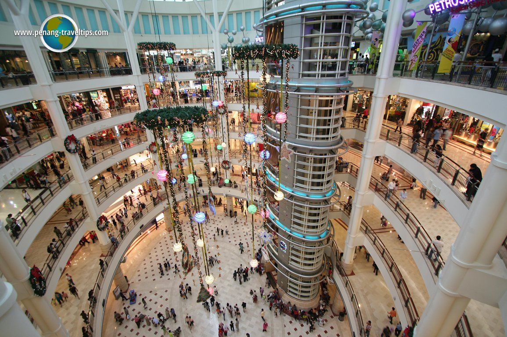
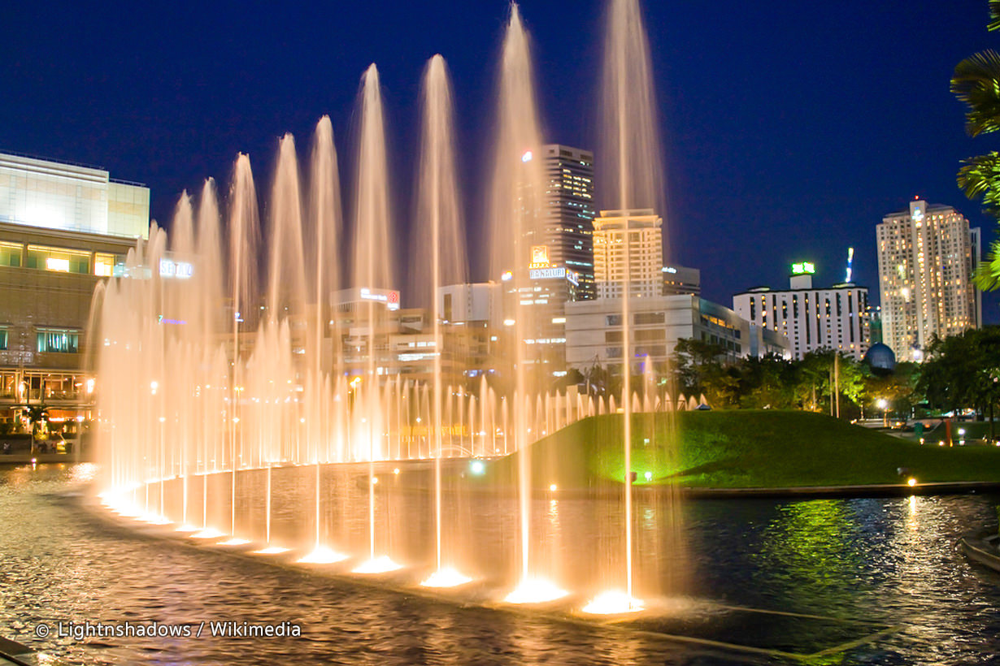

Back
Petronas Twin Towers
Go to Bottom
The Petronas Towers, also known as the Petronas Twin Towers (Malay: Menara Petronas, or Menara Berkembar Petronas), are twin skyscrapers in Kuala Lumpur, Malaysia. According to the Council on Tall Buildings and Urban Habitat (CTBUH)'s official definition and ranking, they were the tallest buildings in the world from 1998 to 2004, until they were surpassed by Taipei 101. The Petronas Towers remain the tallest twin towers in the world.
The buildings are a landmark of Kuala Lumpur, along with nearby Kuala Lumpur Tower; they remain the tallest buildings in Kuala Lumpur.The tower has about 88(+5 below ground)floors in it.
Attractions
Suria KLCC

KLCC park

Skybridge

Go to Top